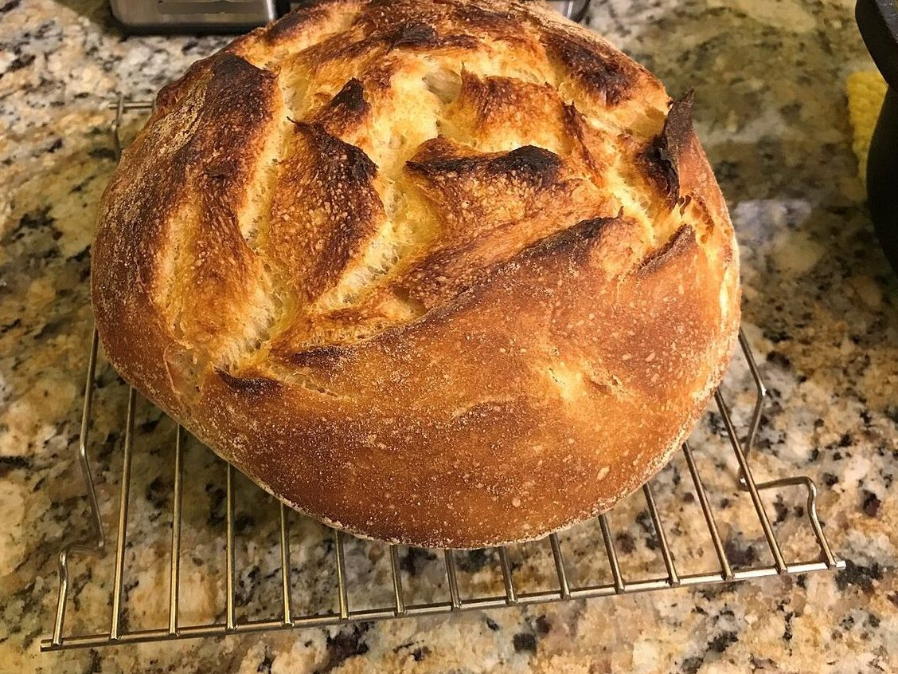
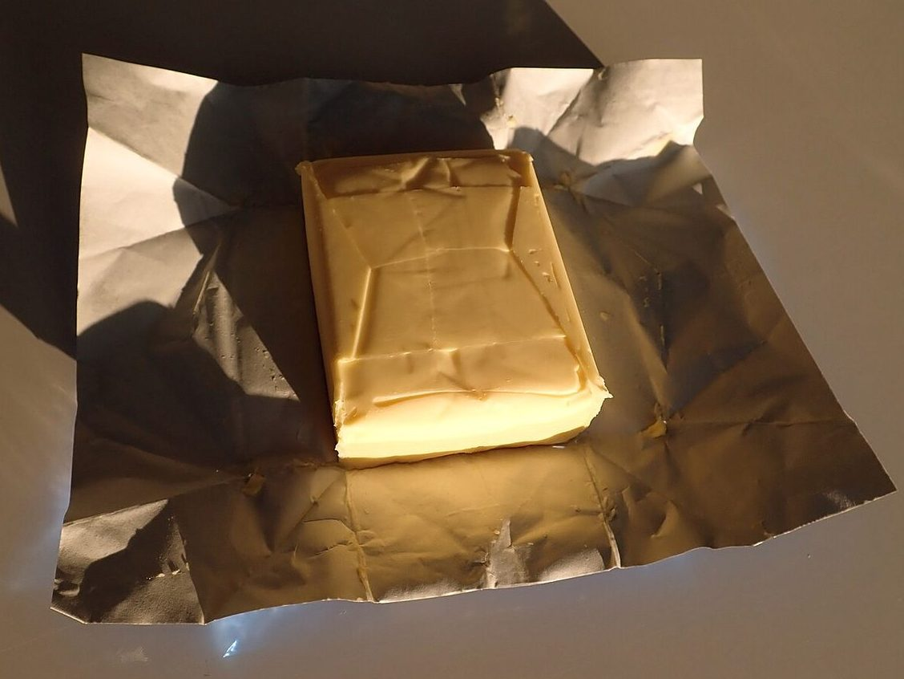
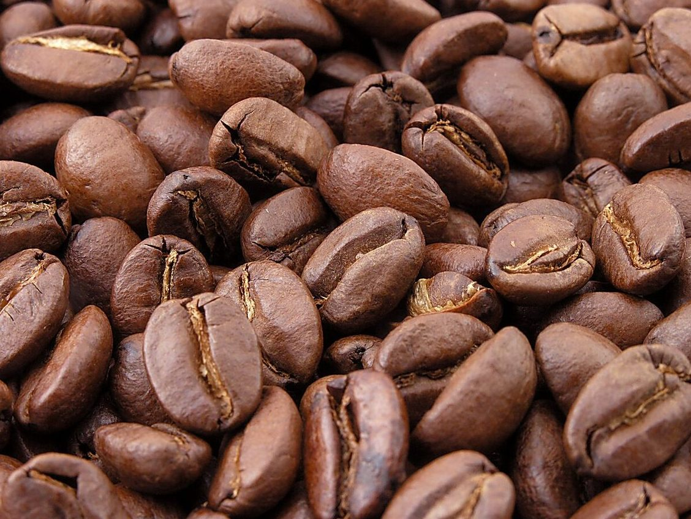
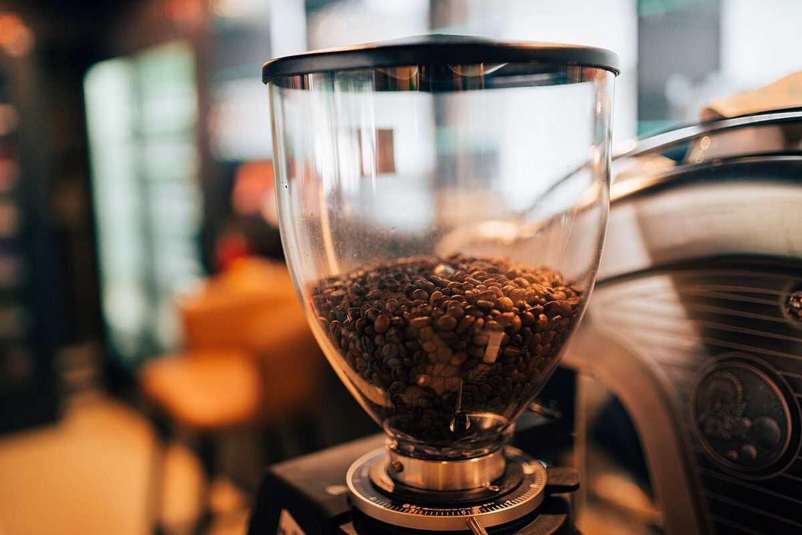
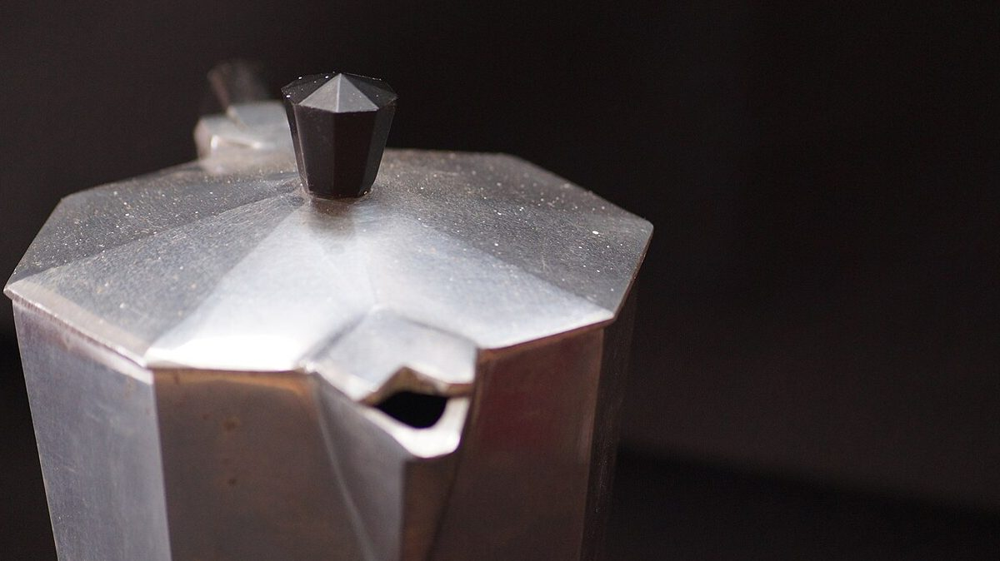
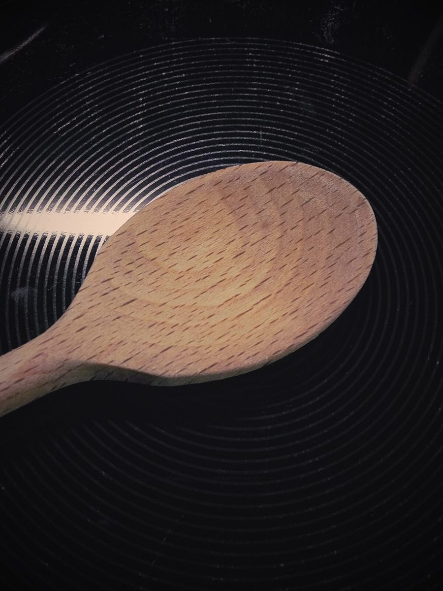

制作側の連想
屋号の「and」から、&を結び目に
店名の由来は分かりません。制作側は、屋号の「and」から記号の「&」(アンパサンド)を連想し、物と物を&でつなぐ見立てでこのサイトを作りました。お店の理念・由来とは無関係の、制作側の連想です。写真は、材料や道具の「ふたつ組」を並べたフリー素材のイメージです。
ふたつ組の見本帖(イメージ)
ひとつとひとつを、&でつなぐ。
お店で使っているものではありません。「ふたつ組」の見立てで選んだ、国外・撮影地不明のフリー素材です。


01 豆と挽き機豆 & 挽き機


02 ポットと木べらポット & 木べら
ご案内
お店のこと(確認できたものだけ)
| 所在地 | 〒694-0224 島根県大田市三瓶町小屋原270 |
|---|---|
| 電話 | 080-6318-3398 |
| 営業時間 | 準備中 |
| 定休日 | 準備中 |
| ご予約 | 準備中 |
| 駐車場 | 準備中 |
| SNS | Instagram @and_people20 |